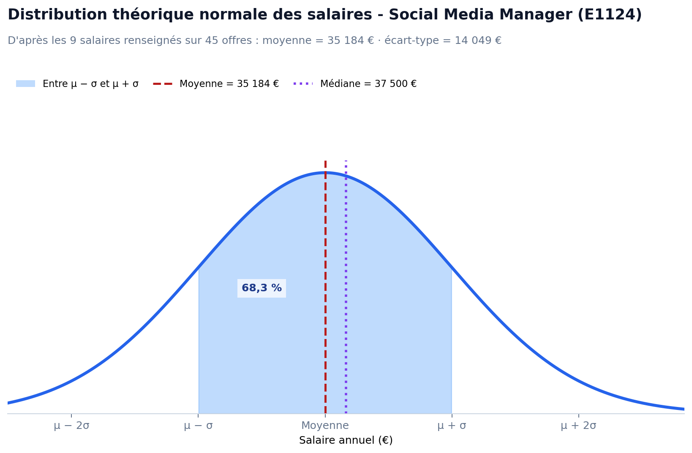

Observatoire Métier
Étude des offres d’emploi · ROME E1124
Observatoire · ROME E1124
Observatoire Métier : Social Media Manager (ROME E1124)
Analyse statistique d’un corpus de 45 offres d’emploi réelles issues de France Travail, à partir de la base de données resume.json.

Explorer l’analyse
Choisissez un onglet pour consulter la répartition des contrats, les salaires ou les prochaines analyses.
Les Contrats
Répartition des 45 offres selon le type de contrat annoncé.

Le CDI arrive en tête, avec près d’une offre sur deux. Les CDD représentent un peu moins de trois offres sur dix ; les professions libérales et l’intérim constituent le reste de la répartition. L’intérim correspond à 1 offre (2,2 %).
Dispersion des Salaires
Salaires bruts annuels communiqués dans les offres E1124.

Moyenne · Somme des 9 salaires ÷ 9 = 35 184 €
Médiane · 5e salaire après classement croissant = 37 500 €
Pour une fourchette, le calcul retient son milieu.

Sur la courbe normale théorique, la zone bleue entre la moyenne moins un écart-type et la moyenne plus un écart-type, soit de 21 135 € à 49 233 €, représente environ 68,3 % de la distribution modélisée.
Limite importante : seuls 9 salaires sur 45 offres sont renseignés (20 %). Les 68,3 % sont une propriété théorique de la loi normale, et non la proportion observée parmi ces 9 salaires. Les résultats peuvent donc être affectés par le biais des salaires manquants et ne décrivent pas nécessairement l’ensemble des offres.
Analyse bivariée
Section en cours de construction - Analyse statistique à venir
Compétences & Insights
Section en cours de construction - Analyse statistique à venir